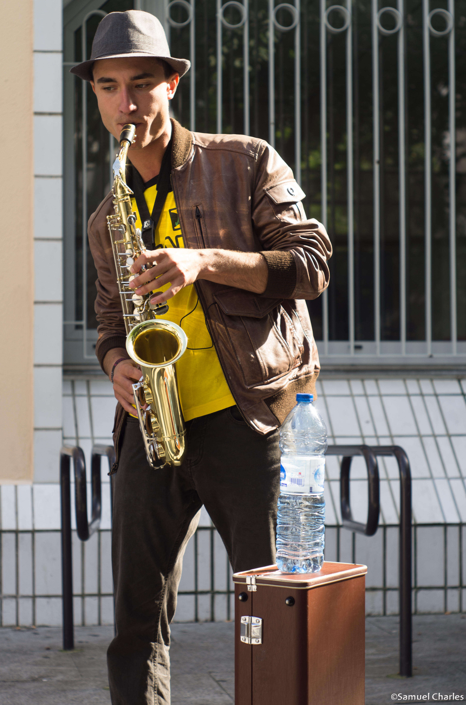
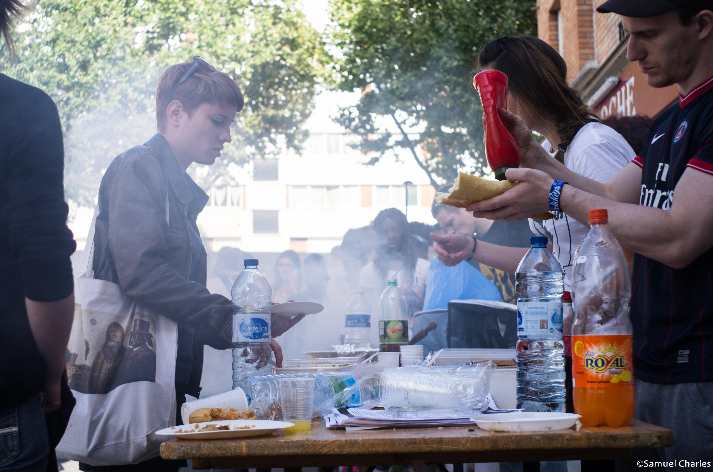

ASSOCIATION DO THE RED THINGS

Qui sommes-nous ?
Do The Red Things est une association située sur Paris et constituée de jeunes franciliens. Nous partageons une passion commune pour le hip-hop, nous avons souhaité promouvoir celle-ci en nous regroupant au sein d’une association. C’est en mettant en place des évènements festifs, associatifs, militants et socio-culturels que nous voulons véhiculer notre vision de cette culture, à l’image d’une association consciente des enjeux sociaux.
A travers cette association nous voulons créer un espace de discussion, de débat, d’échange, promouvoir les artistes hip-hop et militer pour la création artistique.
Nos actions s’articulent autour des différentes composantes de la culture hip-hop. Le rap, le graff, la danse et le deejaying, avec la volonté de favoriser l’unité de cette culture.
Nous sommes un collectif regroupant des jeunes travaillant dans des domaines divers et variés : étudiants en sciences politiques, professionnels de l’audiovisuel, travailleurs sociaux, animateurs socio-culturel, graphistes etc. Mais nous sommes aussi constitués d’artistes et de jeunes sans emplois.
Nous sommes ouverts à tous ceux qui souhaitent prendre part à notre volonté de créer une alternative culturelle pour le hip-hop.
Nous fonctionnons de manière bénévole, en nous basant sur une adhésion idéologique et affinitaire entre les différents membres de l’association.
Aujourd’hui nous formons une équipe d’environ 12 personnes.
Quelle est notre vision du Hip Hop ?
Dans un monde où s’expriment les luttes sociales et culturelles, nous sommes farouchement attachés aux volontés premières du mouvement hip-hop. Notre souhait est de redonner à la culture hip-hop son aspect populaire et spontané, écho d’une génération porteuse d’une parole sociale.
Par ailleurs, ce sont les valeurs positives de cette culture que nous souhaitons favoriser comme l’unité, le respect et le dépassement de soi.
Nous faisons le constat aujourd’hui d’un mouvement hip-hop développé mais malheureusement en concurrence, peu structuré, souvent en rupture avec les valeurs dans lesquelles il trouve ses racines.
L'association Do The Red Things a pour ambition de renouer avec ces valeurs de partage, de respect, d'émancipation à travers plusieurs projets lors de cette année 2014. Cet objectif ne pourra être atteint sans le renforcement des collaborations. Entres les associations qui sont actrices localement, mais aussi avec les différentes structures qui s’inscrivent dans une démarche d’éducation populaire, de solidarité internationale, de sport etc.
Notre volonté commune ici est de renforcer le lien social et sensibiliser les différents publics à des enjeux sociaux. Ou encore avec des collectifs en luttes dans l’objectif de donner un écho, une visibilité aux actions qui s’effectuent localement ou internationalement.
C'est dans cette optique que nous fonctionnons. Nous avons effectué divers événements en partenariat avec différents acteurs :
• L’Université Paris-8
• Le collectif « Quartier Libre »
• Le Centre d’Animation de Montgallet (75012)
• Le label indépendant BBoy Konsian
• La MJC « Ligne 13 » à Saint-Denis
• Les éducateurs du 12ème
• La Miroiterie dans le 20e
Etc.
- Cela prend concrètement la forme de « forum militant » : il s’agit de faire participer par le biais de débats, de projections, de prises de parole, des acteurs qui agissent dans les quartiers concernés. Il s’agit ici de donner une voix aux participants de nos évènements, en leur donnant la possibilité de s’exprimer et de rencontrer des personnes qui sont susceptibles de les intéresser.
Un outil : la Block Party
- Fêtes de quartier :
S’inscrire localement en partenariat avec des acteurs du quartier, institutionnels ou militants. Mettre en valeurs les artistes hip-hop du quartier, créer des liens avec des acteurs artistiques extérieurs.
Organiser un moment convivial en mixant les diverses formes d’expression de la culture hip- hop, à savoir le rap (sous la forme de micros-ouverts, ou de concerts), le graff (en invitant des artistes, ou en mettant en place des ateliers à destination des plus jeunes) et de la danse (sous la forme de spectacles chorégraphiques, ou de battles).
 